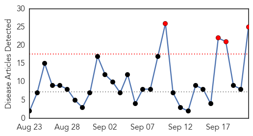

Measles
30-Day Web Trend
2 alerts, 3 warnings
30-Day Twitter Trend
0 alerts, 0 warnings

Article Locations
Article Confidences

Top Articles:
Top Tweets:
-
No tweets found for Sep 21, 2015
Influenza
30-Day Web Trend
4 alerts, 0 warnings

30-Day Twitter Trend
3 alerts, 0 warnings

Article Locations

Article Confidences

Top Articles:
- 0.996
- Health Department offers flu shots, tips on staying healthy
- 0.996
- Flu Shot?
- 0.996
- Flu Season 2015 — Getting The Influenza Jab Could Save Your Life
- 0.994
- Free influenza vaccines to become available Oct. 1: CDC
- 0.986
- Nearly half of U.S. population make annual flu vaccination routine, health officials call on all to get vaccinated
- 0.985
- The 2015 Flu Vaccine May Be A Lot Better Than Previous Versions, But Are Americans Accepting It?
- 0.976
- FLU SHOTS: Reformulated vaccine will be more potent, officials say
- 0.976
- Better Than Last Year's, CDC Doctors Promise
- 0.944
- Health Officials Urge Iowans To Get Flu Immunization
- 0.917
- Health Officials Urge North Carolinians To Prepare For Flu Season With Better Vaccine
- 0.902
- Alberta aims for 40% immunization rate this flu season
- 0.859
- Canterbury first in flu vaccine but numbers still low
- 0.858
- Flu shots available
- 0.854
- Canterbury tops in flu jab
- 0.826
- Free influenza vaccines to become available Oct. 1: CDC
- 0.821
- Clearing up Flu Misconceptions ahead of Season
- 0.744
- Wild birds affected by bird flu first time in Ghana
- 0.739
- Inland Bays, Atlantic Ocean, Rehoboth Beach, Lewes, Milton, Dewey Beach, USA
- 0.724
- NZ authorities proved Kiwi horses were not behind Malaysia's equine flu
- 0.715
- Don't Wait For Newest Flu Vaccines To Get Vaccinated, Say Doctors
- 0.673
- Under the Microscope - Officials, Farmers Prepare for Fall Bird Flu Outbreak Amid Ongoing Mystery
- 0.605
- Ames company gets USDA approval for bird flu vaccine
- 0.594
- KTIC Radio
- 0.568
- Inland Bays, Atlantic Ocean, Rehoboth Beach, Lewes, Milton, Dewey Beach, USA
- 0.560
- Poultry Barns In The US To Use Heat In Response To Bird Flu
Top Tweets:
-
No tweets found for Sep 21, 2015